Build the gear mechanisms, then verify them. These are the seven gear builds for Activity 2.2 — the same mechanisms as the chapter, with the real VEX build photos, animations, and a video of each one working. Use them at the bench.
Build your assigned mechanism, watch it move (animation + ▶ video), then fill that mechanism's row in the Evidence Chart in your Google Doc deliverable, with a captioned photo of your build. The numbered Conclusion Questions are answered separately at the end of the deliverable.
▶ MythBadger — VEX Gear Tutorials (VEX EXP, 24 videos)
Every mechanism below has a step-by-step Building a… and Examining a… video from MythBadger, built with VEX EXP parts and aligned to this course. Start with Building the Platform, or play the whole 24-video playlist:
Simple Gear Train
Rotary in → rotary out · trades speed for torque
Build it
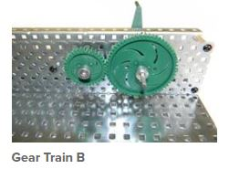
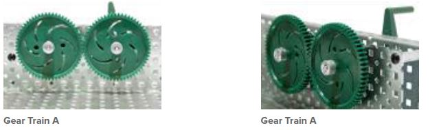
▶ VEX build video — MythBadger: Building a Simple Gear
See it in motion
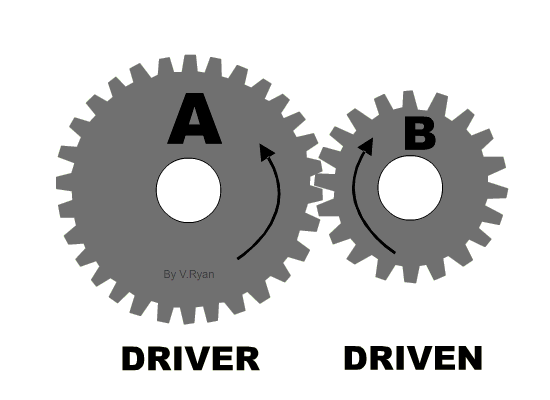
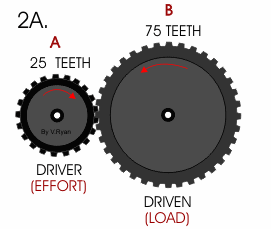
Fill this mechanism’s row in the Evidence Chart in your Google Doc deliverable — these are the columns to complete (Conclusion Questions are answered separately):
- Teeth: drive → driven
- Predicted ratio (driven ÷ drive)
- Measured ratio (turns in : out)
- Speed ↑↓= and torque ↑↓=
- Direction (same/opposite) and reversible?
- Where it's used (example)
Simple Gear Train with Idler
Rotary in → rotary out · direction changes, ratio doesn't
Build it
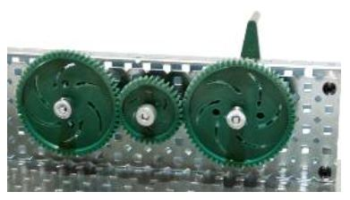
▶ VEX build video — MythBadger: Examining a Simple Gear w/Idler
Fill this mechanism’s row in the Evidence Chart in your Google Doc deliverable — these are the columns to complete (Conclusion Questions are answered separately):
- Predicted ratio (does the idler change it?)
- Measured ratio (turns in : out)
- Speed ↑↓= and torque ↑↓=
- Direction between input and output
- Predict: direction if the idler were removed
- Where it's used (example)
Compound Gear Train
Rotary in → rotary out · stages MULTIPLY (new for 2.2)
Build it
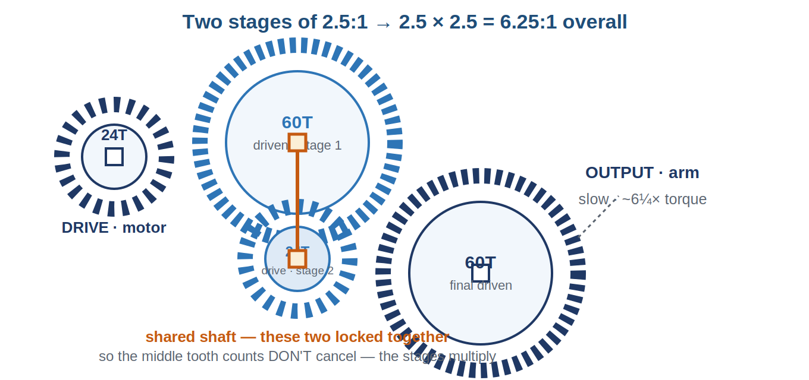
▶ VEX build video — MythBadger: Compound Gears
See it in motion
Fill this mechanism’s row in the Evidence Chart in your Google Doc deliverable — these are the columns to complete (Conclusion Questions are answered separately):
- Teeth in each stage (stage 1 → stage 2)
- Predicted overall ratio = stage 1 × stage 2 (show the multiplication)
- Measured ratio (turns in : out)
- Did you reach at least 6:1?
- Speed ↑↓= and torque ↑↓=
- Why the shared-shaft gear doesn't cancel like an idler
Bevel Gear Assembly
Rotary in → rotary out · turns a 90° corner
Build it
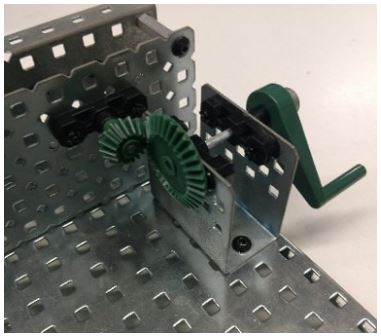
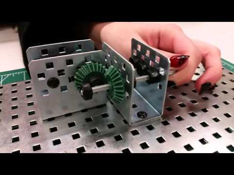
▶ VEX build video — MythBadger: Building a Bevel Gear
See it in motion
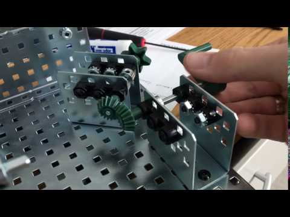
Fill this mechanism’s row in the Evidence Chart in your Google Doc deliverable — these are the columns to complete (Conclusion Questions are answered separately):
- Angle of input shaft to output shaft
- Predicted / measured ratio
- Speed ↑↓= and torque ↑↓=
- If the input gear were smaller, effect on speed/torque?
- Reversible?
- Where it's used (example)
Worm and Wheel
Rotary in → rotary out · huge reduction, self-locking
Build it
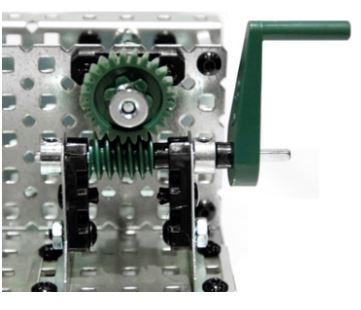
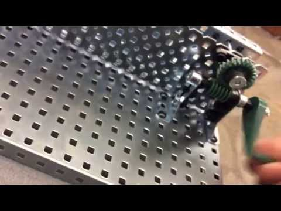
▶ VEX build video — MythBadger: Building a Worm & Wheel Gear
See it in motion
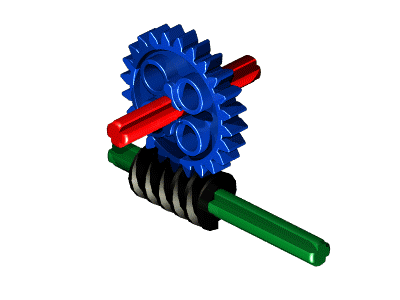
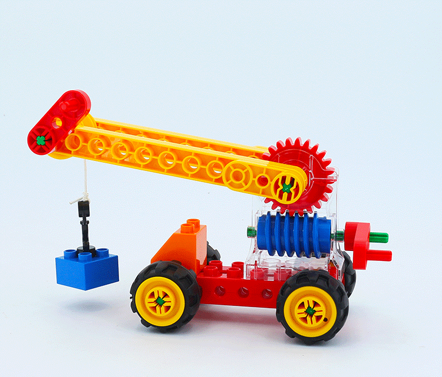
Fill this mechanism’s row in the Evidence Chart in your Google Doc deliverable — these are the columns to complete (Conclusion Questions are answered separately):
- Angle of input shaft to output shaft
- Predicted / measured ratio
- Speed ↑↓= and torque ↑↓=
- Reversible? (try to back-drive it by turning the wheel)
- Direction of travel reversible?
- Where it's used (example)
Rack and Pinion
Rotary in → linear out
Build it
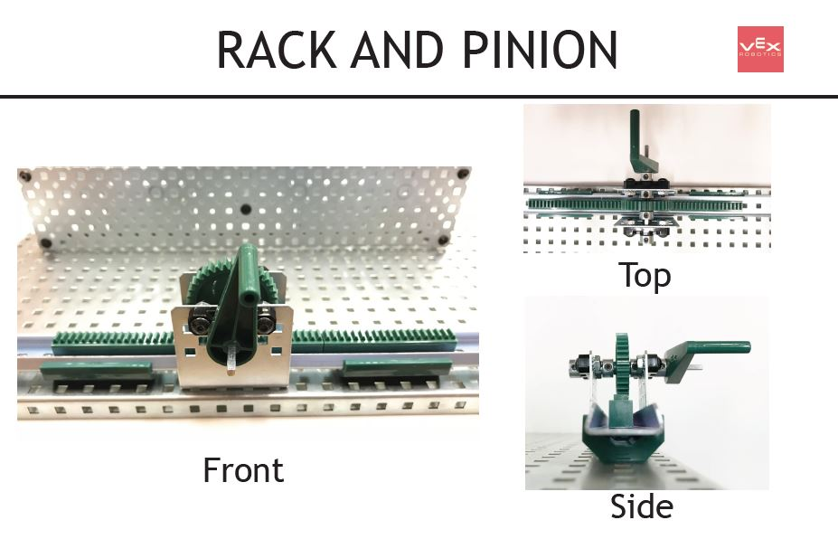
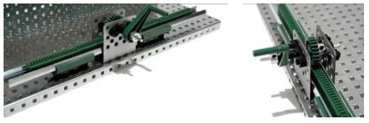
▶ VEX build video — MythBadger: Building a Rack & Pinion
See it in motion
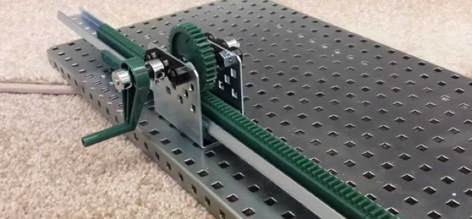
Fill this mechanism’s row in the Evidence Chart in your Google Doc deliverable — these are the columns to complete (Conclusion Questions are answered separately):
- Motion in → motion out
- Distance the rack moves per turn (ratio, if any)
- If the pinion were larger, shorter or longer travel?
- Reversible? (slide the rack to turn the pinion?)
- Direction reversible?
- Where it's used (example)
Chain Drive
Rotary in → rotary out · sends power across a distance, same direction
Build it
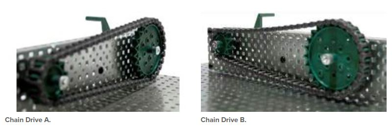
▶ VEX build video — MythBadger: Building a Chain Drive
Fill this mechanism’s row in the Evidence Chart in your Google Doc deliverable — these are the columns to complete (Conclusion Questions are answered separately):
- Drive vs. driven sprocket; angle of input to output
- Predicted / measured ratio (train A)
- Speed ↑↓= and torque ↑↓=
- Effect if the small sprocket drives (image B)
- Same or opposite direction?
- Where it's used + advantage over spur gears
Build photos & motion clips from the Stauffer MS Mechanical Gears / Mechanisms procedures deck (VEX EXP). Step-by-step build videos from Mythbadger Videos — VEX Gear Tutorials playlist. Animated diagrams by V. Ryan / technologystudent.com. Videos are external (YouTube); links open in a new tab.